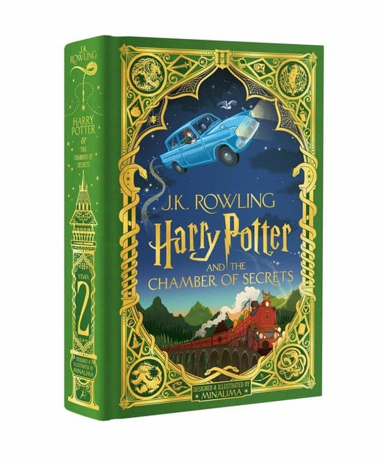
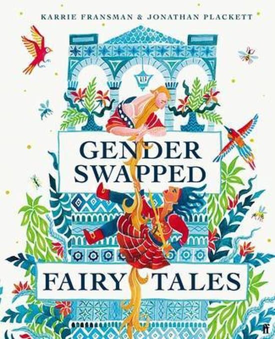

Page Thoughts
The Haunting Season: Ghostly Tales for Long Winter Nights
by Bridget Collins and more
Stap binnen in de mysterieuze wereld van "The Haunting Season: Ghostly Tales for Long Winter Nights." Laat je meevoeren naar donkere nachten en fluisterende schaduwen, waar de sfeer doordrenkt is met mysterie en de grenzen tussen werkelijkheid en het bovennatuurlijke vervagen. Dit meeslepende boek neemt je mee op een betoverende reis door griezelige verhalen, speciaal ontworpen voor lange winteravonden. Tussen de pagina's ontvouwen zich spookachtige vertellingen die je zullen rillen van spanning en je zintuigen zullen prikkelen met elke draai van het verhaal. De auteur weeft een web van onverklaarbare gebeurtenissen en bovennatuurlijke ontmoetingen, en nodigt je uit om je onder te dompelen in de duistere en beklemmende sfeer van de winterse nachten. Of je nu een liefhebber bent van klassieke griezelverhalen of op zoek bent naar een nieuwe favoriet om bij kaarslicht te lezen, "The Haunting Season" belooft een beklijvende ervaring die je hart sneller doet kloppen en je verbeelding op hol brengt. Bereid je voor op een literaire reis naar het onbekende, waar elk verhaal een spoor van mysterie achterlaat in de diepten van de winterse duisternis.
Weird Things Customers Say in Bookshops
by Jen Campbell
Welkom in de komische en soms wonderlijke wereld van "Weird Things Customers Say in Bookshops." Dit boek werpt een luchtige blik op de kleurrijke interacties die zich afspelen tussen boekverkopers en klanten, en onthult de verbazingwekkende, hilarische, en soms ronduit bizarre opmerkingen die in boekwinkels worden gemaakt. Van absurde verzoeken tot onverwachte uitspraken, dit boek neemt je mee op een amusante reis door de eigenaardigheden van het boekwinkelwezen. Of je nu zelf een boekhandelaar bent, een frequente boekenkoper, of gewoon een liefhebber van komische anekdotes, "Weird Things Customers Say in Bookshops" laat je glimlachen terwijl het de humoristische kant van het boekwinkelavontuur onthult. Bereid je voor op een dosis luchtige grappen en herkenbare situaties die de liefde voor boeken in een nieuw daglicht plaatsen.
Al die mooie vreemden
by Elizabeth Klehfoth
Stap binnen in de betoverende wereld van "Al die mooie vreemden", een meeslepende roman doordrenkt met mysterie en intrige. Geschreven door Elizabeth Klehfoth, neemt dit boek je mee op een enigmatische reis vol onthullingen, onverwachte wendingen en de diepe complexiteit van menselijke relaties. In de schaduw van een elite kostschool ontvouwt zich een verhaal dat de grenzen van geheimen en verborgen verlangens verkent. De hoofdpersonages, met hun diepe emoties en onuitgesproken geheimen, zullen je betoveren en meeslepen in een web van mysterie en onthullingen. Of je nu houdt van psychologische drama's, intrigerende familieverhalen of gewoon op zoek bent naar een boek dat je niet meer loslaat, "Al die mooie vreemden" belooft een literaire ervaring die je raakt en verrast tot de laatste bladzijde. Bereid je voor op een emotionele achtbaan waarin de lijn tussen liefde en verlies, geheimen en openbaringen, op fascinerende wijze vervaagt.
Vinterland
by Kim Faber
Door een professionele misstap wordt inspecteur Martin Juncker uit Kopenhagen naar een klein en saai provinciestadje gestuurd. Zijn enige uitdaging: de spanningen rond het plaatselijke asielzoekerscentrum. Als er een bom ontploft in hartje Kopenhagen en Junckers voormalige partner Signe Kristiansen op de zaak wordt gezet, voelt hij zich volledig buitengesloten. Het onderzoek verloopt moeizaam, tot Kristiansen plots een gouden tip krijgt. Ondertussen belandt er tot Junckers grote verbazing een moordzaak op zijn bureau. Het lijkt een uit de hand gelopen overval, maar als blijkt dat het slachtoffer banden had met neonazi’s, wordt al snel duidelijk dat er een link is met Signes zaak. En de winter in Kopenhagen is pas net begonnen…
The Illustrated Collection: Harry Potter and the Philosophers Stone
by J.K. Rowling
Prepare to be spellbound by Jim Kay's dazzling depiction of the wizarding world and much loved characters in this full-colour illustrated hardback edition of the nation's favourite children's book - Harry Potter and the Philosopher's Stone. Brimming with rich detail and humour that perfectly complements J.K. Rowling's timeless classic, Jim Kay's glorious illustrations will captivate fans and new readers alike. Het eerste avontuur in de betoverende Harry Potter-saga - de serie die de wereld van boeken voor altijd heeft veranderd. Harry Potter heeft nog nooit van Zweinstein gehoord wanneer de brieven beginnen binnen te vallen op de deurmat van nummer vier, Ligusterlaan. Geadresseerd in groene inkt op geelachtig perkament met een paars zegel, worden ze snel in beslag genomen door zijn akelige tante en oom. Dan, op Harry's elfde verjaardag, barst een grote, keverogige reus van een man genaamd Rubeus Hagrid binnen met verbazingwekkend nieuws: Harry Potter is een tovenaar en hij heeft een plek op Zweinsteins Hogeschool voor Hekserij en Hocus-Pocus. Een ongelooflijk avontuur staat op het punt te beginnen!
Muggenland
by David Arnold
Het leven van Mim Malone staat op zijn kop. Haar vader en nieuwe stiefmoeder besloten te verhuizen, waardoor Mim opeens in de wastelands van Mississipi woont, in plaats van haar vertrouwde Ohio. En voordat deze storm goed en wel is gaan liggen, hoort ze dat haar moeder ziek is geworden. Mim laat haar nieuwe leven achter zich en stapt in een Greyhound-bus richting het noorden, naar haar échte thuis en échte moeder. Als haar duizenden kilometers lange reis opeens anders loopt dan verwacht, moet Mim de strijd met haar eigen demonen aangaan, met een beetje hulp van een paar bijzondere medereizigers.
Volwassen worden is optioneel
by Marloes de Vries
Wat als je leeftijdstechnisch gezien wel volwassen bent, maar je totaal niet zo voelt? Wat als iedereen om je heen baby's krijgt, terwijl bij jou zelfs vetplanten doodgaan? En is het erg als jouw toekomstplannen zich beperken tot je plannen voor het avondeten, in plaats van je carrière? Marloes de Vries is een Nederlandse illustrator en kan als geen ander de #struggles van het leven in een stripje vatten. In Volwassen worden is optioneel tackelt ze allerlei vreselijk herkenbare situaties. Leuk voor iedereen die zelf volwassen dreigt te worden, of er met genoegen aan terugdenkt.
Gone Girl
by Gillian Flynn
Op de dag dat hij vijf jaar getrouwd is, maakt Nick Dunne bekend dat zijn beeldschone vrouw Amy vermist wordt. De politie verdenkt hem en Amy's vrienden onthullen dat ze bang voor hem was en dingen voor hem verzweeg. Nick zweert dat dit niet waar is, maar onder druk van de politie en de media ontstaan er langzaam maar zeker haarscheurtjes in het door Nick geschetste beeld van zijn perfecte huwelijk. Zijn leugens, bedrog en vreemde gedrag roepen vragen op. Heeft Nick zijn vrouw vermoord?
The Grumpus: And His Dastardly, Dreadful Christmas Plan
by Alex T. Smith
Ken je The Grumpus? En zijn Ellendig, Verschrikkelijk Kerstplan? En weet je van het Verschrikkelijke Ding dat op Kerstavond gebeurde op de Noordpool? Misschien moet ik je erover vertellen... Dit hartverwarmende verhaal volgt de avonturen van een onwaarschijnlijke held terwijl hij naar de Noordpool reist, onbewust en enigszins met tegenzin onderweg veel nieuwe vrienden makend. The Grumpus is bestemd om een moderne kerstklassieker te worden waar volwassenen en kinderen jaar na jaar naar terugkeren.
Angstige mensen
by Fredrik Backman
Het bezoeken van een open huis is meestal geen kwestie van leven of dood, maar het wordt precies dat wanneer een bankrover na een mislukte overval een appartement binnenvalt waar op dat moment een bezichtiging plaatsvindt. Onder de aanwezigen bevinden zich onder anderen een zevenentachtigjarige vrouw die lang genoeg heeft geleefd om niet bang te worden als ze wordt bedreigd met een pistool, een jong stel dat op het punt staat voor het eerst een kind te krijgen maar het over niets eens lijkt te kunnen worden, en een mysterieuze man die zich heeft opgesloten in het toilet. Tijdens deze bezichtiging die ineens een gijzeling is geworden leren de aanwezigen elkaar steeds beter kennen en onthullen ze tegen wil en dank verrassende waarheden over zichzelf. Ieder van hen heeft een leven met verdrietige momenten, pijnlijke herinneringen, geheimen voor hun naasten en passies waar ze zich voor schamen. Als de gijzelaars na enige tijd worden vrijgelaten maar de politie de gijzelnemer niet in het appartement aantreft, vormt dat het begin van een serie verwarrende verhoren, waarin niemand lijkt te kunnen uitleggen wat er in het appartement is gebeurd. Angstige mensen is een hilarische en tegelijkertijd aangrijpende roman over de kracht van vriendschap, vergeving en hoop – de dingen die ons redden, zelfs in de meest angstige tijden.

Harry Potter and the Chamber of Secrets
by J.K. Rowling
Maak je klaar om betoverd te worden door deze nieuwe editie van J.K. Rowling's Harry Potter en de Geheime Kamer, ontworpen en geïllustreerd door MinaLima. Met meer dan 150 fullcolour illustraties en acht exclusieve, interactieve papieren elementen kunnen lezers reizen via het Floo Network, de Whomping Willow tegenkomen, de spiraaltrap naar het kantoor van Perkamentus onthullen en zelfs Middagbollen uit hun potten trekken! Deze spectaculaire editie is het perfecte cadeau voor Harry Potter-fans van alle leeftijden, een prachtige toevoeging aan elke boekenverzameling en een betoverende manier om deze geliefde serie aan een nieuwe generatie lezers te introduceren.

Gender Swapped Fairy Tales
by Karrie Fransman
Stel je een wereld voor waarin koningen hun vingers prikken terwijl ze naaien, wolven hakken dragen, en prinsessen racen om slapende prinsen te redden... Mensen vertellen al honderden jaren sprookjes aan hun kinderen. En bijna net zo lang herschrijven mensen die sprookjes - om hun kinderen te helpen zich een wereld voor te stellen waarin zij de helden zijn. Karrie en Jon lazen hun kind deze verhalen voor toen ze voor een dilemma stonden, iets wat ontbrak in eerdere versies van deze verhalen, en dus besloten ze één essentiële verandering te maken... Ze hebben de verhalen in dit boek niet herschreven. Ze hebben de eindes niet opnieuw bedacht of de personages opnieuw uitgevonden. Wat ze hebben gedaan, is alle geslachten omwisselen. Het klinkt misschien niet als zo'n grote verandering, maar je zult versteld staan van de wereld die deze omwisseling creëert - en verbaasd zijn over de nieuwe personages die je gaat ontdekken.